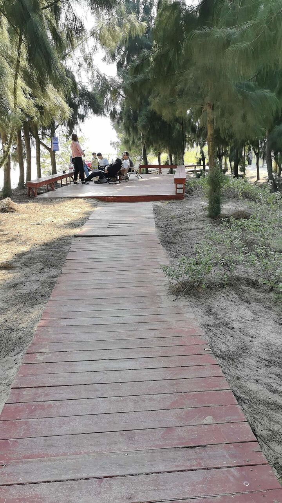
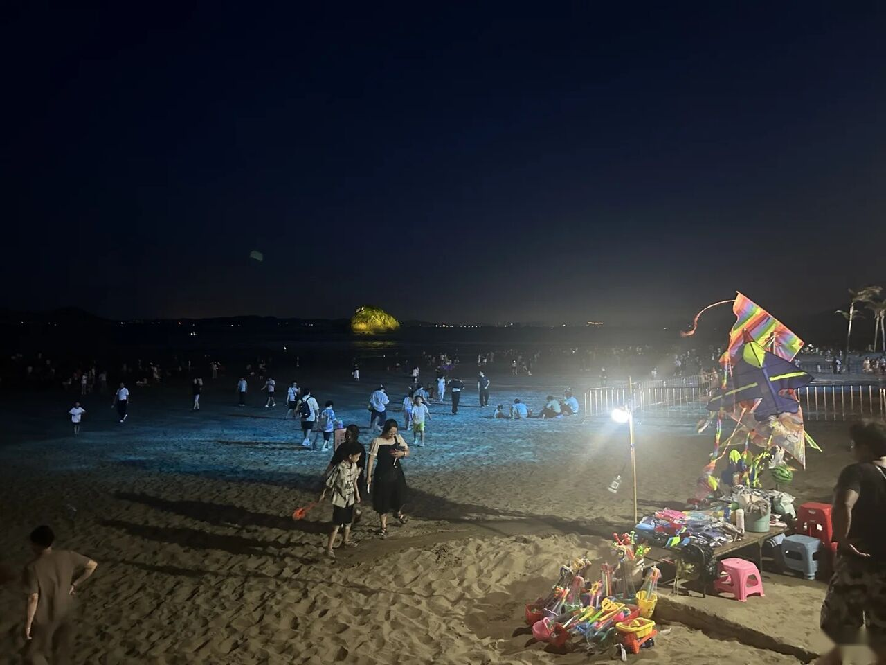

冬天的琅岐岛：景景景人，福州人少的海边一天
国庆假期，朋友圈里的风景照几乎都是同一个构图：前面是人，后面是人，再后面还是人。网友管这叫「景人人人」。
到了冬天，琅岐岛换了一种比例：「景景景人」。海是景，木栈道是景，渔船回港是景，晚上那轮从海面升起来的月亮也是景；人嘛，主要是沙滩上散步的大爷，和蹲着挖沙、谁叫都不肯走的小孩。
琅岐岛在闽江入海口，福州市区开车约 40 分钟就到，不用排队，不用抢票。下面是一天不赶路的走法，适合想躲开人潮、只想安安静静看海的周末。
上午：防风林木栈道，慢慢走一圈

海边的沙丘上种着一片老防风林，林子里铺了一条木栈道。冬天海风大，走进林子里风会小很多，阳光从树缝里漏下来，脚下是木板咯吱咯吱的声音。不用走多快，也不用拍够多少张，走累了就在长椅上坐一会儿，这一段的意义就是「慢」。
下午：金鸡报晓海滩，踩浪、赶海
度假村门口就是金鸡报晓海滩，沙子细，滩面宽。冬天下海游泳就算了，但踩踩浪、在沙滩上走一走正好。
退潮的时候，滩面会露出一大片，孩子们在这里能捡到小螃蟹、小螺和贝壳。冬天赶海记得三件事：先查好潮汐，看今日潮汛就行；穿一双能湿的鞋；带一套换洗衣服——主要是给裤腿准备的。小的螃蟹玩完就放回去，带走的只有垃圾和照片。
傍晚：去渔港看渔船「下班」
琅岐的闽江渔港，傍晚 17:00 到 20:00 是最热闹的时候：渔船陆续回港，一筐一筐往岸上卸，渔民直接在码头边摆摊零售。冬天（11 月到第二年 2 月）能看到青蟹、梭子蟹、虾、蛏子、花蛤、海蛎，还有黄鱼、带鱼、鲳鱼。11 月中旬到元旦前后，还是琅岐特产红蟳的母红膏蟳季节。
码头没有固定开门时间，随潮水和渔期浮动，地面也湿滑，穿防滑的鞋去。更多见琅岐渔港攻略。
晚上：坐在沙滩上，等月亮

门口这片海朝东，农历十五前后，傍晚太阳落下去没多久，月亮就会从海面那边升起来，刚出海的时候是红色的，在海上拉出一道长长的倒影。冬天的海边夜里有点冷，裹件外套，坐在沙滩上听一会儿浪。
用一句网上的话说：夜里的海边，前途一片黑暗，但是好安静。
冬天来，几点看日出、日落
11 月底琅岐岛大约 6 点半前后日出、5 点出头日落，每一天的准确时间、天气和潮汛都在今日潮汛页自动更新。想看日出不用跑远，度假村门口的沙滩就能看到海上日出。早上起来裹着外套走两步，就能看到太阳从海面上出来。
晚上住哪：回到海边的别墅
有福海墅在龙鼓度假村里，出门就是沙滩。冬天屋里开着暖风不冷，海风吹够了就回屋，泡一壶茶，听着海浪声睡觉。几个朋友或一家人来，也可以把一整栋包下来。
回头看这一天：没赶任何一个景点，没排任何一个队，也没在任何一张照片里数出十个以上的人。恍然小悟：原来周末不一定要去人多的地方。